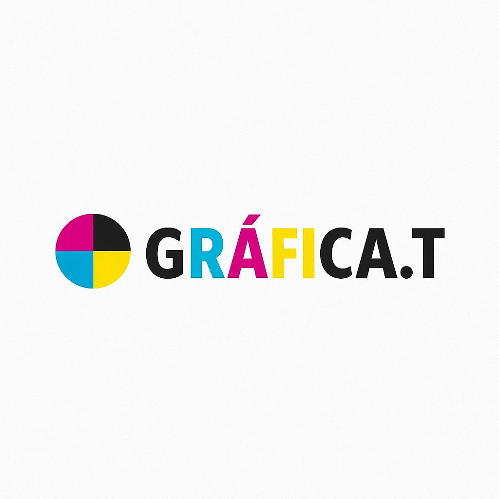
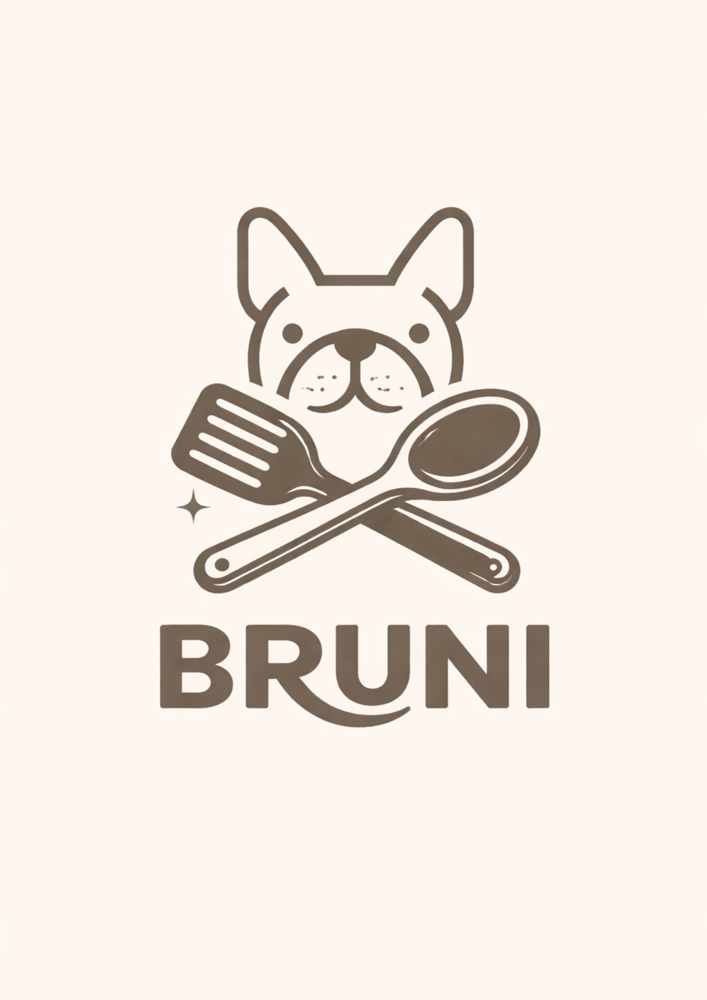

Flehner
[breve descripción, la armamos con tu info]
Ver más →Las marcas no solo necesitan verse bien.
Necesitan una idea que las haga crecer.
Marketing • Creatividad • Tecnología
Sobre mí
Soy Cande, estudiante de Marketing y Administración de Empresas en UADE, tengo 23 años y me especializo en identidad de marca y creación de contenido. Soy de las que no se conforma con que algo se vea bien, necesito entender por qué funciona.
Con el tiempo aprendí a disfrutar el proceso completo del marketing: el momento en que una idea todavía es solo un concepto, cuando empieza a tomar forma visual, y cuando finalmente se convierte en algo terminado. No tengo una etapa favorita, me engancha la secuencia entera.
Trabajo con una mezcla de estructura y creatividad a la vez. No dejo que una idea se quede solo en lo lindo: me importa que funcione. Cuando termino un proyecto, lo que más me importa no es solo que se vea bien, sino que refleje realmente lo que la persona o la marca quería decir, y que cumpla lo que se esperaba de él.
Este portfolio reúne eso: proyectos donde una idea encontró su forma final, y funcionó.
¿Todavía no me creés? Mirá mis proyectos →Proyectos
[breve descripción, la armamos con tu info]
Ver más →
Gestión de redes sociales y creación de contenido en Instagram y TikTok.
Ver más →
Identidad visual y estrategia de lanzamiento para un emprendimiento familiar.
Ver más →Concepto de marca personal fitness con proyección a línea de indumentaria.
Ver más →Diseño y desarrollo 100% propio de este sitio, desde cero.
Ver más →Próximamente
Reseñas
"Excelente experiencia trabajando con Candela. Muy profesional, creativa y atenta a cada detalle. Entendió perfectamente lo que necesitaba y entregó un trabajo de gran calidad, incluso superando mis expectativas. La comunicación fue excelente durante todo el proceso. Sin dudas la recomiendo a cualquiera que busque una profesional comprometida con su trabajo."
— Martin, Grafica T
"Un placer trabajar con Candela. Es profesional y tiene iniciativa. Colaboró con muy buenas ideas para mi marca y me ayudó en varios aspectos. Es ordenada y cumple con los tiempos, algo que es fundamental para mí."
— David Sierra, DS Clothing
Contacto
¿Tenés un proyecto en mente o querés charlar? Escribime.